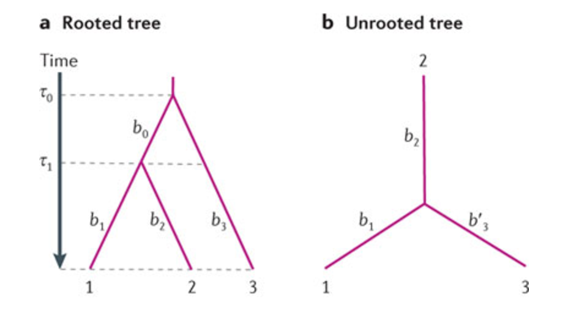
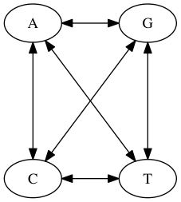
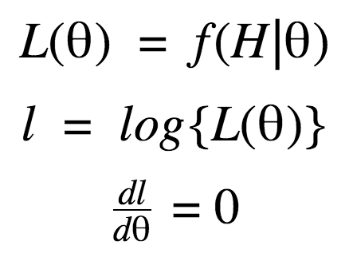
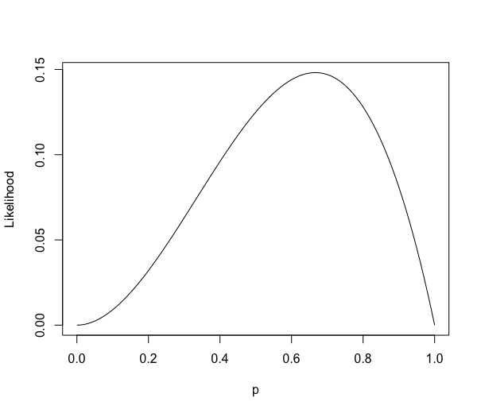
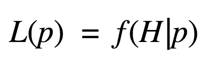
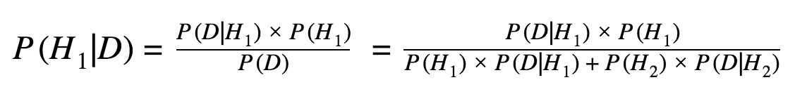
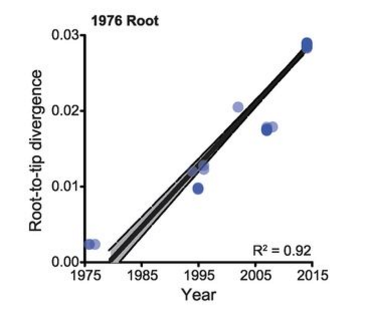
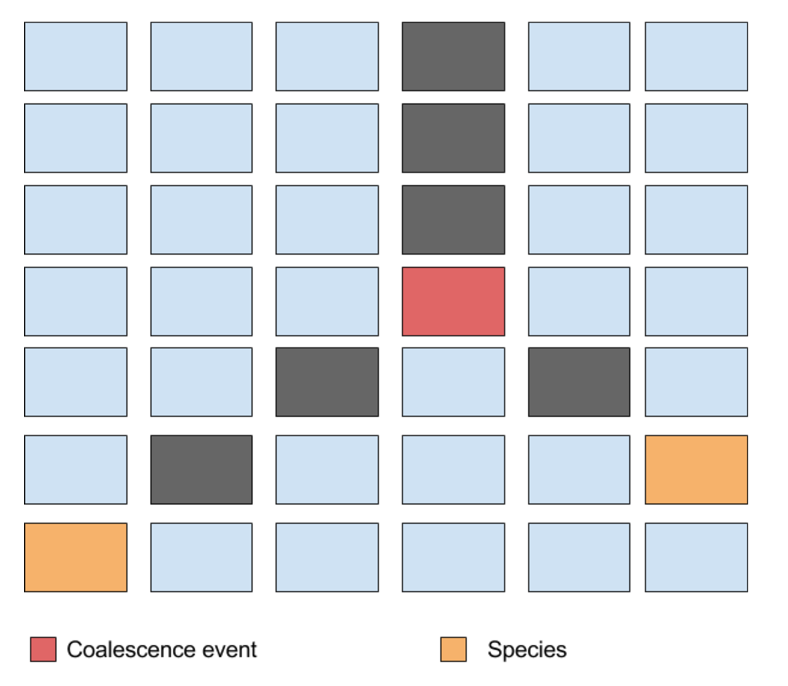
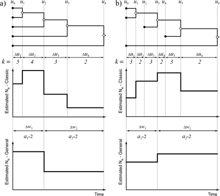

Phylogenetics
Introduction
A phylogenetic tree describes evolutionary history.

Phylogenetic trees can be (re)constructed from multiple sequence alignments of genes, functional domains of proteins or even entire genomes!
Rooted and Unrooted trees

Algorithmic
- UPGMA
- Neighbour Joining
Optimaility
- Maximum Parsimony
- Maximum Likelihood*
- Bayesian Inference*
Maximum Parsimony
Not very accurate.
Tends to move towards the wrong tree.
Suffers from long branch attraction.

Branches that are far apart tend to be grouped together incorrectly.
Markov Chain
A Markov chain is a type of Markov process in which the next value of a state depends only on the present state of the system.
They are of two types, discrete and continuous.
Continuous Time Markov Chain
In a CTMC, the state can have values at any point in time unlike discrete time markov chains.

Q is the substitution rate matrix.
P is the matrix of transition probabilities.
Nucleotide Substitution Models

Jukes and Cantor 1969

PS: Other models exist such as HKY, GTR.
Maximum Likelihood Estimation
Likelihood
Probability of observing data given the hypothesis.

Likelihood of 'HHT'


Using ML for phylogenetic reconstruction

Bayesian inference
Discrete

Continuous

|
|
|
|

|

|

|
Neutral theory of molecular evolution
The theory holds that most evolutionary changes occur due to genetic drift i.e. random sampling of an allele rather than natural selection.
Introduced by Motoo Kimura.
Molecular clock
It is a technique that uses mutation rates to deduce time of divergence.
Assumes that mutations occur in a clock-like manner.
It was introduced by Emile Zuckerkandl and Linus Pauling. Backed by neutral theory of evolution. Can be used to root trees!

Incorporating molecular clock into Bayesian Inference

Wright Fisher Process

Time to Most Recent Common Ancestor

Detailed history of human population sizes between ten thousand and a million years ago

Bayesian Skyline Plot

Introducing Coalescence into Bayesian Inference

Markov Chain Monte Carlo
A method to sample the posterior distribution using 'random steps'.
Sketch Metropolis-Hastings MCMC algorithm
- Start with a 'random tree' tree with topology 'T', substitution parameters 'mu' and coalescenct parameter 'lambda'.
- Propose a change to either of the 3 parameters.
- Topology can be changed using NNI, SPR or TBR.
- Coalesence can be changed subjext to conditions.
- If posterior probability is higher accept change. else, go to step 2.